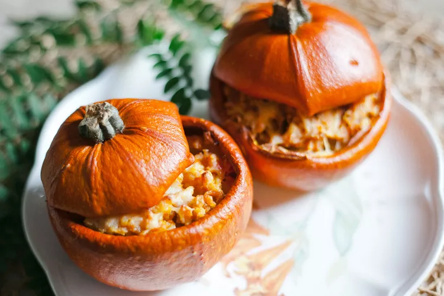

Halloween Pumpkin Stew

Description
"I am not sure where this recipe originated, but it has been a Halloween tradition in my husband's family for at least 20 years. It is a dinner we look forward to all year. Served with cornbread or sourdough rolls. Yum!" - Melissa
Prep Time: 30 mins
Cook Time: 1hr 10 mins
Servings: 6
Ingredients
- 6 pounds pumpkin with fairly straight sides
- ¾ pound lean ground beef
- 1 teaspoon oregano
- ½ teaspoon salt
- ¼ teaspoon ground black pepper
- 1 onion, diced
- 2 large stalks celery, diced
- ½ medium green bell pepper, diced
- 2 pounds mozzarella cheese, cubed
- 1 pounds tomato sauce
- 1 ½ cups water
- 1 (15.25 ounce) can corn, drained
- 6 large mushrooms, sliced
- ¾ cup instant rice
Directions
- Preheat the oven to 375 degrees F (190 degrees C). Line a rimmed baking sheet with heavy duty aluminum foil.
- Wash the pumpkin and cut off the top at an angle to form a lid that won't fall through. Clean out and discard seeds and string.
- Heat a large skillet over medium-high heat. Cook and stir beef, oregano, salt, and pepper in the hot skillet until browned and crumbly, 5 to 7 minutes. Add onion, celery, and bell pepper; cook 3 minutes. Add mozzarella cheese, tomato sauce, water, corn, mushrooms, and instant rice. Stir well.
- Pour mixture from the skillet into the pumpkin and replace lid.
- Bake in the preheated oven for about 1 hour. When serving, scrape the insides of the pumpkin to get some of the soft flesh in each bowl.
return